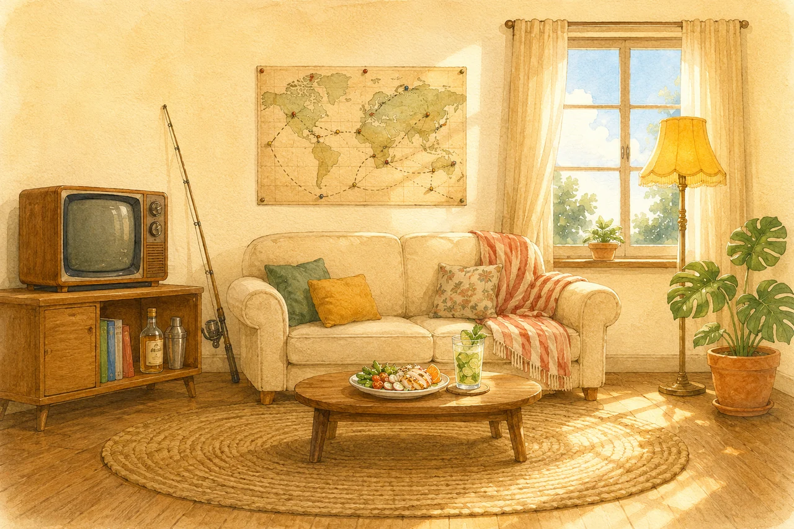

谢松伦
产品设计师。10 年 B 端复杂系统设计，长处在体验与应用。
查看作品 ↓在模型能力快速迭代的背景下，设计需要回答的问题正在发生变化：什么该交给生成，什么必须被约束，结果如何被评价和复用。
这种方法目前被用在设计团队的 AI 原型生成，以及分布式运营的物料生产与验收中。前者关注想法如何快速变成可讨论的方案，后者关注生成结果如何在规范与数据约束下保持稳定。
现在 · AI6
复杂 B 端产品5 +
写作7
生活4 类
关于
我做了 10 年企业级产品设计，主要负责桌面端的复杂系统，先后就职于滴滴国际、字节跳动火山引擎和快手。参与的项目以 0 到 1 的新产品为主，也负责过几套老系统的重构。目前已申请专利 15 项以上，其中 2 项为发明专利。
AI 降低了开发成本，想法可以更快地做成可运行的原型，设计与实现之间的距离缩短了很多，这也让我比以前更愿意投入设计。无论技术怎么变化，体验始终是产品的核心；技术门槛越来越低时，创造力和审美会成为更稀缺的能力。
经历
联系
历史作品
Archive
过去参与的企业级产品项目：视频剪辑、经营分析、视频云体验和设计系统建设。
快手云剪 Onvideo — 从 0 到 1
面向多端协同视频剪辑的 SaaS 产品。参与视觉与交互重构，梳理剪辑链路、协作方式和关键操作，沉淀 10+ 外观专利、1 项发明专利。
↗BABI 经营分析平台重构
从 0 到 1 主导 BABI 产品重构与易用性优化，与 PM 共同重构产品架构，视觉交互全面升级，获公司内部认可。
↗视频云基础体验优化
统筹视频点播、RTC、VelmageX 等多个产品体验优化，梳理并推动解决 600+ 体验问题，补齐表单、文案、状态和组件规范。
↗多媒体中台物料库建设
推动视频云物料库建设，完成通用页面 80% 覆盖率，共建设 39 组件、11 区块、8 页面，模块数达物料团队第一。
↗AI 思考
Signal
关于 AI 与设计工作的思考，以及 Paige 实践中留下的具体记录。
设计团队需要怎样的 AI 工具
从需求理解、方案比较到持续修改与团队复用，思考 AI 工具如何参与设计工作。
↗针对 CC 和 codex 的真实对比
用 Paige 里的同一个真实需求，对比 CC 和 codex 的处理方式。两边测试都通过，但具体输入暴露出不同的默认判断和风险。
↗通过不等于做对
一次指标看起来很好之后的复查：字段复用、语言混排、PRD 漏页都没有被原来的检查暴露出来。
↗一个看不见的提交按钮
Paige 曾生成一个结构正确但按钮透明的弹窗。后来我把模型动作收窄成操作词表，并用 diff 记录真实变化。
↗我为什么没自研 JSON 解析
Paige 里结构化输出复用现成能力；我把时间留给 PageModel、渲染约束、评价器和失败日志。
↗我动了不该动的那层
一次把字段决策放错层导致的质量退化。大脑可以灵活迭代，生成层必须稳定，这是后来才补上的架构纪律。
↗Paige 读 PRD 为什么要回路
一次性生成只是转换。Paige 读 PRD 保留回路，是因为它需要根据评价器指出的漏页、错字段再修一轮。
↗设计之外
Human
工作之外的我。这份作品集聊了很多 AI，但做这一切的，是一个人。

会做一桌菜
高兴的日子做一桌菜，难过的日子也做一桌菜。有一阵沉迷烤恰巴塔，手撕肋排是保留节目，勃艮第红酒炖牛肉要配一杯自己调的莫吉托。工具也认真——最称手的是一把日本堺的实光厨刀。
调酒，玩得有点认真
不是摆着好看的爱好：上过课、修过 whisky 证书、混过调酒师的聚会。从 Gin Tonic 这样的经典一路往深里走——自己写茶酒配方、自己蒸金酒，冰球也是手凿的。
重看次数最多的两部
一部剧一部电影，讲的其实是同一种人：不聪明，但一直走。
不抛弃，不放弃。一个不聪明的人，把一件事做到底，做成了所有聪明人做不成的样子。
Run, Forrest, run. 想不明白的时候，先跑起来，路会在跑的过程里出现。
盖过章的地方
每到一个地方，比起景点，更喜欢看当地人怎么过日子。
活人感清单
钓鱼是耐心练习，露营是重启方式，咖啡是每天的开机键。大部分灵感不在工位上，在大自然里。
韧性
我不太相信一夜之间的改变，更相信长期做一件事时形成的稳定性。从西北的一座小城出发，很多路都不是提前铺好的，只能自己判断、自己补课、自己往前走。《士兵突击》和《阿甘正传》我重看了很多遍，大概也是因为我喜欢那种慢一点但不停下来的人。